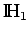
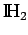
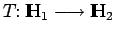
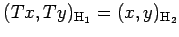

In jedem separablen HILBERT-Raum existiert eine Basis. Daraus ergibt sich, daß jedes orthonormale System zu einer Basis ergänzt werden kann.
Zwei HILBERT-Räume  und  heißen isomorph (oder isomorph als HILBERT-Räume), wenn es eine lineare, bijektive Abbildung  mit der Eigenschaft  (also eine das Skalarprodukt und wegen (12.108) auch die Norm erhaltende Abbildung) gibt. Es gilt: Zwei beliebige unendlichdimensionale separable HILBERT-Räume sind stets isometrisch, also insbesondere ist jeder solche Raum isometrisch zu dem separablen Raum  .
.